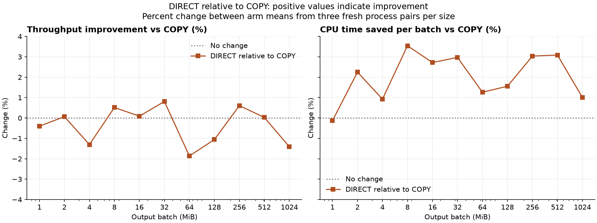

Benchmark direct output¶
Compare private collation plus copy with direct public arena allocation.
Both arms generate the same fresh CPU inputs and use an ordinary public
spdl.pipeline.defs.ProcessPoolExecutorConfig region, parent-created
spdl.pipeline.SharedMemorySegmentPool instances passed via public
initializer/initargs, ordinary IPC of opaque allocation tickets,
and main-process pool.recover(ticket) contexts. The copy control
collates into a private tensor, then uses output.copy_(batch); direct uses
torch.cat/stack(parts, out=output) on a caller-created Torch view over
unit.allocate_bytes storage. Shape/dtype metadata travel beside the ticket;
recovery yields bytes that this caller interprets. There is
no private executor subclass, decoder, queue wrapper or SPDL import.
Run the matched public workflow¶
In a CUDA-capable environment with SPDL IO, NumPy and Torch installed:
python examples/benchmark_direct_output.py --sizes 8 --dtypes float32 \
--ops stack --workers 2 --parts 4 --rows 16 --slots 2 --batches 8 \
--runs 3 --repeats 3 --duration-sec 15 --source-commit local \
--output direct-allocation-results
Both performance arms use pin_memory=True and the public synchronized
spdl.io.transfer_tensor_h2d() helper. Each matched repetition creates
fresh consumer/worker processes; order rotates. The CLI launches local processes
only, not infrastructure jobs. --self-test --source-commit local selects
bounded CPU/unpinned/H2D-off checks, explicitly not performance evidence.
Size requests round up to complete input shapes; actual delivered bytes are
reported. source_commit and optional build metadata are caller labels, not
runtime source authentication. Exact-source packaging and infrastructure
scheduling are caller-owned, not actions performed by this example.
make_parts, collate_private, collate_direct, run_epoch,
run_benchmark and run_repetitions are executable public entrypoints.
Worker phase timers cover actual source generation, cat/stack, explicit copy,
reservation acquisition, output allocation and seal. Main IPC latency is receipt
minus post-seal monotonic time, including queueing/scheduling/backpressure;
recovery times the public recover call plus context entry. H2D host/completion
includes the public helper’s traversal, pin checks and synchronization, not pure DMA. Full-value
CPU/GPU verification is excluded from those phase timers but included in complete
checked epochs and CPU telemetry. Do not add overlapping phase durations.
The consumer and producer CPU measurements cover the same enclosing interval,
which can include prefetch and between-epoch work.
RSS/PSS peaks are sampled sums across main and all workers within one sample,
not sums of individual peaks; sequential read spans and missing observations
are reported. RSS double-counts shared mappings; PSS is proportional. Setup,
one checked warmup epoch and teardown are excluded. The pinned warmup additionally
verifies public pin_memory() aliases both tensor and underlying storage pointers;
this check is outside measured phases. Public pool.close() terminal cancellation
runs in cleanup’s finally path before public stop/join; physical retirement is
retried after complete initializer receipts and OS-confirmed worker reap. Only
then are shared names unlinked and initializer queues closed.
Failed cleanup retains these owners durably in a process-local lifecycle registry,
independent of tracebacks or GC; _drain_failed_cleanups() explicitly retries
only after actual worker reap. Throughput uses the sum of
completed epoch times, not the requested enclosing duration. No unqualified
speedup, bandwidth-cause, training-throughput or no-staging claim follows.
Tickets are opaque, with only the read-only arena_id routing property exposed.
Their implementation details stay private: this example imports no allocation
type and inspects no descriptor fields. Ordinary stdlib pickle has no ownership
effects. Producer PIDs come from ordinary initializer/envelope os.getpid()
receipts, not ticket metadata. Route by pools[ticket.arena_id]; recover once,
or pool.discard(ticket) once if never read. Retained tensor/storage aliases postpone reuse independently of wrapper
lifetime. See ../optimization_guide/direct_allocations for the public
recipe, sizing, lifetime contract and measurement caveats.
Measured caller-managed allocation comparisons¶
Both arms use pinned shared storage, ordinary allocation-ticket IPC and the same public synchronized host-to-device (H2D) helper. This is a comparison of collation paths, not of pinning policies or isolated device-transfer rates.


The relative plots compare the arm means. Zero means no change; positive values mean higher throughput or less CPU time per batch with DIRECT.

Output MiB |
Arm |
Trials |
Batches/s |
Sample SD (batches/s) |
DIRECT/COPY |
Main CPU ms/batch |
Worker CPU ms/batch |
Total CPU ms/batch |
Group peak PSS MiB |
Generation ms/batch |
Collation ms/batch |
Explicit copy ms/batch |
IPC latency ms/batch |
Recovery ms/batch |
H2D helper ms/batch |
Verified batches |
|---|---|---|---|---|---|---|---|---|---|---|---|---|---|---|---|---|
1 |
COPY |
3 |
261.5505 |
3.6851 |
— |
5.575 |
2.477 |
8.053 |
2088.3 |
1.280 |
0.089 |
0.127 |
11.252 |
0.103 |
0.160 |
11752 |
1 |
DIRECT |
3 |
260.4937 |
6.2483 |
0.9960 |
5.653 |
2.410 |
8.063 |
2092.0 |
1.309 |
0.106 |
0.000 |
11.321 |
0.102 |
0.164 |
11712 |
2 |
COPY |
3 |
148.9848 |
0.9338 |
— |
9.771 |
3.980 |
13.751 |
2101.8 |
2.489 |
0.187 |
0.241 |
19.822 |
0.093 |
0.176 |
6696 |
2 |
DIRECT |
3 |
149.0847 |
1.2409 |
1.0007 |
9.722 |
3.720 |
13.442 |
2099.0 |
2.487 |
0.183 |
0.000 |
19.870 |
0.092 |
0.174 |
6704 |
4 |
COPY |
3 |
77.0393 |
0.4951 |
— |
18.762 |
7.299 |
26.061 |
2154.8 |
5.064 |
0.383 |
0.591 |
38.314 |
0.099 |
0.214 |
3472 |
4 |
DIRECT |
3 |
76.0346 |
0.3213 |
0.9870 |
18.987 |
6.833 |
25.820 |
2111.7 |
5.119 |
0.426 |
0.000 |
38.980 |
0.095 |
0.221 |
3416 |
8 |
COPY |
3 |
34.5428 |
0.2848 |
— |
38.252 |
14.579 |
52.831 |
2214.0 |
11.736 |
0.621 |
1.496 |
85.400 |
0.126 |
0.347 |
1568 |
8 |
DIRECT |
3 |
34.7208 |
0.1111 |
1.0052 |
37.927 |
13.033 |
50.960 |
2192.7 |
11.587 |
0.741 |
0.000 |
85.663 |
0.124 |
0.342 |
1576 |
16 |
COPY |
3 |
16.7211 |
0.0952 |
— |
80.358 |
28.789 |
109.147 |
2225.0 |
23.830 |
1.937 |
2.871 |
176.744 |
0.147 |
0.532 |
768 |
16 |
DIRECT |
3 |
16.7361 |
0.1729 |
1.0009 |
80.438 |
25.741 |
106.179 |
2228.4 |
23.706 |
1.645 |
0.000 |
177.606 |
0.153 |
0.538 |
760 |
32 |
COPY |
3 |
7.9251 |
0.0228 |
— |
171.316 |
59.222 |
230.538 |
2464.6 |
50.122 |
3.436 |
5.776 |
373.201 |
0.159 |
0.855 |
360 |
32 |
DIRECT |
3 |
7.9892 |
0.0211 |
1.0081 |
170.103 |
53.583 |
223.686 |
2402.9 |
50.422 |
3.220 |
0.000 |
372.589 |
0.158 |
0.854 |
360 |
64 |
COPY |
3 |
3.8512 |
0.0764 |
— |
362.773 |
129.271 |
492.043 |
2915.0 |
110.136 |
6.593 |
12.000 |
767.451 |
0.158 |
1.483 |
192 |
64 |
DIRECT |
3 |
3.7795 |
0.0260 |
0.9814 |
368.387 |
117.448 |
485.835 |
2780.5 |
110.315 |
6.355 |
0.000 |
787.262 |
0.159 |
1.484 |
192 |
128 |
COPY |
3 |
1.7997 |
0.0091 |
— |
797.154 |
273.333 |
1070.487 |
4007.0 |
228.936 |
15.564 |
24.410 |
1637.853 |
0.161 |
2.699 |
96 |
128 |
DIRECT |
3 |
1.7807 |
0.0035 |
0.9894 |
806.621 |
247.188 |
1053.808 |
3742.8 |
232.548 |
12.265 |
0.000 |
1666.829 |
0.157 |
2.710 |
96 |
256 |
COPY |
3 |
0.8567 |
0.0043 |
— |
1733.994 |
563.194 |
2297.189 |
6002.9 |
464.809 |
42.625 |
48.784 |
3451.479 |
0.154 |
5.165 |
72 |
256 |
DIRECT |
3 |
0.8619 |
0.0078 |
1.0061 |
1723.528 |
503.889 |
2227.417 |
5437.5 |
470.862 |
24.522 |
0.000 |
3447.512 |
0.153 |
5.166 |
72 |
512 |
COPY |
3 |
0.4300 |
0.0005 |
— |
3625.334 |
1181.528 |
4806.862 |
10384.1 |
929.550 |
94.572 |
97.788 |
6886.527 |
0.153 |
10.088 |
72 |
512 |
DIRECT |
3 |
0.4301 |
0.0024 |
1.0003 |
3611.587 |
1046.944 |
4658.532 |
9106.4 |
941.033 |
52.471 |
0.000 |
6929.197 |
0.151 |
10.083 |
72 |
1024 |
COPY |
3 |
0.2103 |
0.0030 |
— |
7858.060 |
2344.028 |
10202.088 |
18490.6 |
1920.150 |
147.406 |
195.594 |
14055.836 |
0.152 |
19.870 |
72 |
1024 |
DIRECT |
3 |
0.2073 |
0.0004 |
0.9859 |
7992.325 |
2106.806 |
10099.131 |
16410.5 |
1931.294 |
97.060 |
0.000 |
14311.654 |
0.153 |
19.891 |
72 |
Column legend. Each row is the mean of three fresh trials. Batches/s is verified batches divided by summed measured epoch time; setup, warmup and teardown are excluded. Sample SD describes the three trial rates, not a confidence interval. DIRECT/COPY divides the two arm means. Verified batches is a total. Total CPU time per batch adds CPU time spent by the main consumer process and both producer workers, then divides by verified batches for each trial. It is not elapsed time; the measured interval can include prefetch and between-epoch work. Group PSS is the mean of each trial’s peak sampled group sum, not a sum of independent peaks, an atomic sample or arena capacity.
Phase columns average per-batch wall times within trials, then across trials. IPC includes queueing and backpressure; recovery includes context entry. H2D includes traversal, pin checks and synchronization; it is not pure DMA. Full-value verification contributes to throughput and CPU but is outside the named helper timers. Overlapping phases cannot be added as a critical path. DIRECT’s zero explicit-copy time does not imply a copy-free workflow.
What these examples show¶
DIRECT removes the explicit copy, but the mean throughput ratio ranges from 0.9814 to 1.0081 across sizes. DIRECT is slower at 1, 4, 64, 128 and 1024 MiB. The widest relative spread is at 1 MiB for DIRECT (sample SD 2.4% of its mean) and at 64 MiB for COPY (2.0%). These are small, workload-specific differences.
At 512 MiB, total CPU per batch falls from 4806.9 to 4658.5 ms, and sampled group peak PSS falls from 10384.1 to 9106.4 MiB. At 1024 MiB, PSS falls from 18490.6 to 16410.5 MiB, while throughput is about 1.4% lower.
At 1024 MiB, COPY spends 147.4 ms/batch collating and 195.6 ms explicitly copying; DIRECT spends 97.1 ms collating without the explicit copy. The H2D helper is nearly unchanged (19.87 vs 19.89 ms/batch). Less collation and copy work does not by itself imply faster end-to-end delivery.
Measurement configuration and teardown¶
One attempt on one host and one selected GPU completed the 66 measured trials: 11 sizes from 1 to 1024 MiB, three fresh COPY/DIRECT pairs per size, with arm order rotated. Float32 stack used two workers, four parts, sixteen rows, two slots per worker and eight batches per epoch. Each trial ran at least three epochs and had a 15-second minimum enclosing interval. The measurements include 50,152 fully verified batches. They exclude 528 warmup batches and four CPU/CUDA correctness gates. These are synthetic component measurements, not training results or evidence from independent hosts.
Teardown caveat. Measured full-value, pinning and H2D checks passed, and all 140 reported worker PIDs across measured trials and gates were absent at the post-exit checks. Nevertheless, all 70 trial stderr logs contain pool closing or shutdown tracebacks and wrapped pipeline errors. The measured source completes the checked epochs before creator close, stop and reap; the error signatures are consistent with cancellation of prefetched work in cleanup. The logs do not timestamp each error against the measured window, so this is not evidence of exception-free shutdown or general quiescence. Unfiltered logs and exact measured source identity are retained separately.
Source¶
Source
Click here to see the source.
1# Copyright (c) Meta Platforms, Inc. and affiliates.
2# All rights reserved.
3#
4# This source code is licensed under the BSD-style license found in the
5# LICENSE file in the root directory of this source tree.
6
7r"""Compare private collation plus copy with direct public arena allocation.
8
9Both arms generate the same fresh CPU inputs and use an ordinary public
10:py:class:`spdl.pipeline.defs.ProcessPoolExecutorConfig` region, parent-created
11:py:class:`spdl.pipeline.SharedMemorySegmentPool` instances passed via public
12initializer/initargs, ordinary IPC of opaque allocation tickets,
13and main-process ``pool.recover(ticket)`` contexts. The ``copy`` control
14collates into a private tensor, then uses ``output.copy_(batch)``; ``direct`` uses
15``torch.cat/stack(parts, out=output)`` on a caller-created Torch view over
16``unit.allocate_bytes`` storage. Shape/dtype metadata travel beside the ticket;
17recovery yields bytes that this caller interprets. There is
18no private executor subclass, decoder, queue wrapper or SPDL import.
19
20Run the matched public workflow
21--------------------------------
22
23In a CUDA-capable environment with SPDL IO, NumPy and Torch installed::
24
25 python examples/benchmark_direct_output.py --sizes 8 --dtypes float32 \
26 --ops stack --workers 2 --parts 4 --rows 16 --slots 2 --batches 8 \
27 --runs 3 --repeats 3 --duration-sec 15 --source-commit local \
28 --output direct-allocation-results
29
30Both performance arms use ``pin_memory=True`` and the public synchronized
31:py:func:`spdl.io.transfer_tensor_h2d` helper. Each matched repetition creates
32fresh consumer/worker processes; order rotates. The CLI launches local processes
33only, not infrastructure jobs. ``--self-test --source-commit local`` selects
34bounded CPU/unpinned/H2D-off checks, explicitly **not performance evidence**.
35Size requests round up to complete input shapes; actual delivered bytes are
36reported. ``source_commit`` and optional build metadata are caller labels, not
37runtime source authentication. Exact-source packaging and infrastructure
38scheduling are caller-owned, not actions performed by this example.
39
40``make_parts``, ``collate_private``, ``collate_direct``, ``run_epoch``,
41``run_benchmark`` and ``run_repetitions`` are executable public entrypoints.
42Worker phase timers cover actual source generation, cat/stack, explicit copy,
43reservation acquisition, output allocation and seal. Main IPC latency is receipt
44minus post-seal monotonic time, including queueing/scheduling/backpressure;
45recovery times the public recover call plus context entry. H2D host/completion
46includes the public helper's traversal, pin checks and synchronization, not pure DMA. Full-value
47CPU/GPU verification is excluded from those phase timers but included in complete
48checked epochs and CPU telemetry. Do not add overlapping phase durations.
49
50The consumer and producer CPU measurements cover the same enclosing interval,
51which can include prefetch and between-epoch work.
52RSS/PSS peaks are sampled sums across main and all workers within one sample,
53not sums of individual peaks; sequential read spans and missing observations
54are reported. RSS double-counts shared mappings; PSS is proportional. Setup,
55one checked warmup epoch and teardown are excluded. The pinned warmup additionally
56verifies public ``pin_memory()`` aliases both tensor and underlying storage pointers;
57this check is outside measured phases. Public ``pool.close()`` terminal cancellation
58runs in cleanup's finally path before public stop/join; physical retirement is
59retried after complete initializer receipts and OS-confirmed worker reap. Only
60then are shared names unlinked and initializer queues closed.
61Failed cleanup retains these owners durably in a process-local lifecycle registry,
62independent of tracebacks or GC; ``_drain_failed_cleanups()`` explicitly retries
63only after actual worker reap. Throughput uses the sum of
64completed epoch times, not the requested enclosing duration. No unqualified
65speedup, bandwidth-cause, training-throughput or no-staging claim follows.
66
67Tickets are opaque, with only the read-only ``arena_id`` routing property exposed.
68Their implementation details stay private: this example imports no allocation
69type and inspects no descriptor fields. Ordinary stdlib pickle has no ownership
70effects. Producer PIDs come from ordinary initializer/envelope ``os.getpid()``
71receipts, not ticket metadata. Route by ``pools[ticket.arena_id]``; recover once,
72or ``pool.discard(ticket)`` once if never read. Retained tensor/storage aliases postpone reuse independently of wrapper
73lifetime. See :doc:`../optimization_guide/direct_allocations` for the public
74recipe, sizing, lifetime contract and measurement caveats.
75
76.. _direct-allocation-benchmark-results:
77
78Measured caller-managed allocation comparisons
79----------------------------------------------
80
81Both arms use pinned shared storage, ordinary allocation-ticket IPC and the
82same public synchronized host-to-device (H2D) helper. This is a comparison of
83collation paths, not of pinning policies or isolated device-transfer rates.
84
85.. image:: /_static/data/direct_allocation_results.png
86 :alt: COPY and DIRECT throughput, CPU time and sampled group memory by size
87
88.. image:: /_static/data/direct_allocation_relative.png
89 :alt: DIRECT throughput improvement and CPU time saved relative to COPY
90
91The relative plots compare the arm means. Zero means no change; positive
92values mean higher throughput or less CPU time per batch with DIRECT.
93
94.. image:: /_static/data/direct_allocation_phases.png
95 :alt: COPY and DIRECT collation, explicit copy and H2D helper wall times
96
97.. csv-table:: Caller-managed pinned allocations, three paired repetitions
98 :header-rows: 1
99
100 Output MiB,Arm,Trials,Batches/s,Sample SD (batches/s),DIRECT/COPY,Main CPU ms/batch,Worker CPU ms/batch,Total CPU ms/batch,Group peak PSS MiB,Generation ms/batch,Collation ms/batch,Explicit copy ms/batch,IPC latency ms/batch,Recovery ms/batch,H2D helper ms/batch,Verified batches
101 1,COPY,3,261.5505,3.6851,—,5.575,2.477,8.053,2088.3,1.280,0.089,0.127,11.252,0.103,0.160,11752
102 1,DIRECT,3,260.4937,6.2483,0.9960,5.653,2.410,8.063,2092.0,1.309,0.106,0.000,11.321,0.102,0.164,11712
103 2,COPY,3,148.9848,0.9338,—,9.771,3.980,13.751,2101.8,2.489,0.187,0.241,19.822,0.093,0.176,6696
104 2,DIRECT,3,149.0847,1.2409,1.0007,9.722,3.720,13.442,2099.0,2.487,0.183,0.000,19.870,0.092,0.174,6704
105 4,COPY,3,77.0393,0.4951,—,18.762,7.299,26.061,2154.8,5.064,0.383,0.591,38.314,0.099,0.214,3472
106 4,DIRECT,3,76.0346,0.3213,0.9870,18.987,6.833,25.820,2111.7,5.119,0.426,0.000,38.980,0.095,0.221,3416
107 8,COPY,3,34.5428,0.2848,—,38.252,14.579,52.831,2214.0,11.736,0.621,1.496,85.400,0.126,0.347,1568
108 8,DIRECT,3,34.7208,0.1111,1.0052,37.927,13.033,50.960,2192.7,11.587,0.741,0.000,85.663,0.124,0.342,1576
109 16,COPY,3,16.7211,0.0952,—,80.358,28.789,109.147,2225.0,23.830,1.937,2.871,176.744,0.147,0.532,768
110 16,DIRECT,3,16.7361,0.1729,1.0009,80.438,25.741,106.179,2228.4,23.706,1.645,0.000,177.606,0.153,0.538,760
111 32,COPY,3,7.9251,0.0228,—,171.316,59.222,230.538,2464.6,50.122,3.436,5.776,373.201,0.159,0.855,360
112 32,DIRECT,3,7.9892,0.0211,1.0081,170.103,53.583,223.686,2402.9,50.422,3.220,0.000,372.589,0.158,0.854,360
113 64,COPY,3,3.8512,0.0764,—,362.773,129.271,492.043,2915.0,110.136,6.593,12.000,767.451,0.158,1.483,192
114 64,DIRECT,3,3.7795,0.0260,0.9814,368.387,117.448,485.835,2780.5,110.315,6.355,0.000,787.262,0.159,1.484,192
115 128,COPY,3,1.7997,0.0091,—,797.154,273.333,1070.487,4007.0,228.936,15.564,24.410,1637.853,0.161,2.699,96
116 128,DIRECT,3,1.7807,0.0035,0.9894,806.621,247.188,1053.808,3742.8,232.548,12.265,0.000,1666.829,0.157,2.710,96
117 256,COPY,3,0.8567,0.0043,—,1733.994,563.194,2297.189,6002.9,464.809,42.625,48.784,3451.479,0.154,5.165,72
118 256,DIRECT,3,0.8619,0.0078,1.0061,1723.528,503.889,2227.417,5437.5,470.862,24.522,0.000,3447.512,0.153,5.166,72
119 512,COPY,3,0.4300,0.0005,—,3625.334,1181.528,4806.862,10384.1,929.550,94.572,97.788,6886.527,0.153,10.088,72
120 512,DIRECT,3,0.4301,0.0024,1.0003,3611.587,1046.944,4658.532,9106.4,941.033,52.471,0.000,6929.197,0.151,10.083,72
121 1024,COPY,3,0.2103,0.0030,—,7858.060,2344.028,10202.088,18490.6,1920.150,147.406,195.594,14055.836,0.152,19.870,72
122 1024,DIRECT,3,0.2073,0.0004,0.9859,7992.325,2106.806,10099.131,16410.5,1931.294,97.060,0.000,14311.654,0.153,19.891,72
123
124**Column legend.** Each row is the mean of three fresh trials. Batches/s is
125verified batches divided by summed measured epoch time; setup, warmup and
126teardown are excluded. Sample SD describes the three trial rates, not a
127confidence interval. DIRECT/COPY divides the two arm means. Verified batches
128is a total. Total CPU time per batch adds CPU time spent by the main consumer
129process and both producer workers, then divides by verified batches for each
130trial. It is not elapsed time; the measured interval can include prefetch and
131between-epoch work. Group PSS
132is the mean of each trial's peak sampled group sum, not a sum of independent
133peaks, an atomic sample or arena capacity.
134
135Phase columns average per-batch wall times within trials, then across trials.
136IPC includes queueing and backpressure; recovery includes context entry. H2D
137includes traversal, pin checks and synchronization; it is not pure DMA.
138Full-value verification contributes to throughput and CPU but is outside the
139named helper timers. Overlapping phases cannot be added as a critical path.
140DIRECT's zero explicit-copy time does not imply a copy-free workflow.
141
142What these examples show
143~~~~~~~~~~~~~~~~~~~~~~~~
144
145- DIRECT removes the explicit copy, but the mean throughput ratio ranges from
146 0.9814 to 1.0081 across sizes. DIRECT is slower at 1, 4, 64, 128 and 1024 MiB.
147 The widest relative spread is at 1 MiB for DIRECT (sample SD 2.4% of its mean)
148 and at 64 MiB for COPY (2.0%). These are small, workload-specific differences.
149- At 512 MiB, total CPU per batch falls from 4806.9 to 4658.5 ms, and sampled
150 group peak PSS falls from 10384.1 to 9106.4 MiB. At 1024 MiB, PSS falls from
151 18490.6 to 16410.5 MiB, while throughput is about 1.4% lower.
152- At 1024 MiB, COPY spends 147.4 ms/batch collating and 195.6 ms explicitly
153 copying; DIRECT spends 97.1 ms collating without the explicit copy. The
154 H2D helper is nearly unchanged (19.87 vs 19.89 ms/batch). Less collation
155 and copy work does not by itself imply faster end-to-end delivery.
156
157Measurement configuration and teardown
158~~~~~~~~~~~~~~~~~~~~~~~~~~~~~~~~~~~~~~
159
160One attempt on one host and one selected GPU completed the 66 measured
161trials: 11 sizes from 1 to 1024 MiB, three fresh COPY/DIRECT pairs per size,
162with arm order rotated. Float32 stack used two workers, four parts, sixteen
163rows, two slots per worker and eight batches per epoch. Each trial ran at
164least three epochs and had a 15-second minimum enclosing interval. The
165measurements include 50,152 fully verified batches. They exclude 528 warmup
166batches and four CPU/CUDA correctness gates. These are synthetic component
167measurements, not training results or evidence from independent hosts.
168
169**Teardown caveat.** Measured full-value, pinning and H2D checks passed, and
170all 140 reported worker PIDs across measured trials and gates were absent
171at the post-exit checks. Nevertheless, all 70 trial stderr logs contain pool
172closing or shutdown tracebacks and wrapped pipeline errors. The measured
173source completes the checked epochs before creator close, stop and reap;
174the error signatures are consistent with cancellation of prefetched work
175in cleanup. The logs do not timestamp each error against the measured window,
176so this is not evidence of exception-free shutdown or general quiescence.
177Unfiltered logs and exact measured source identity are retained separately.
178
179""" # noqa: B950 - RST CSV rows preserve one wide, auditable metrics table.
180
181from __future__ import annotations
182
183import argparse
184import csv
185import json
186import math
187import multiprocessing as mp
188import os
189import platform
190import statistics
191import threading
192import time
193from _thread import RLock
194from collections.abc import Callable, Iterator, Mapping, Sequence
195from dataclasses import dataclass
196from functools import partial
197from itertools import product
198from multiprocessing.queues import Queue
199from multiprocessing.sharedctypes import Synchronized
200from pathlib import Path
201from queue import Empty
202from tempfile import TemporaryDirectory
203from typing import Any
204
205import numpy as np
206import torch
207from spdl.io import transfer_tensor_h2d
208from spdl.pipeline import (
209 build_pipeline,
210 Pipeline,
211 PipelineBuilder,
212 SharedMemorySegmentPool,
213)
214from spdl.pipeline.defs import MAIN_PROCESS, ProcessPoolExecutorConfig
215
216__all__ = [
217 "make_parts",
218 "collate_private",
219 "collate_direct",
220 "verify_batch",
221 "run_epoch",
222 "run_benchmark",
223 "run_isolated",
224 "run_repetitions",
225 "parse_args",
226 "main",
227]
228
229_ARMS: tuple[str, ...] = ("copy", "direct")
230_DTYPES: tuple[str, ...] = ("float16", "float32", "float64", "uint8")
231_SCHEMA: str = "public-direct-allocations-v2"
232_DEFAULT_TRIAL_TIMEOUT = 1800.0
233_WORKER_POOL: SharedMemorySegmentPool | None = None
234
235
236@dataclass(frozen=True)
237class _Batches:
238 batches: int
239
240 def __iter__(self) -> Iterator[int]:
241 yield from range(self.batches)
242
243
244def make_parts(
245 sequence: int, *, parts: int, rows: int, columns: int, dtype: str = "float32"
246) -> tuple[int, list[torch.Tensor]]:
247 """Create fresh deterministic CPU inputs shared by both collation arms.
248
249 Args:
250 sequence: Nonnegative batch identity, incorporated into every input value.
251 parts: Positive number of inputs.
252 rows: Positive rows per input.
253 columns: Positive columns per input.
254 dtype: float16, float32, float64 or uint8.
255
256 Returns:
257 Identity and independently allocated CPU tensors. Generation includes
258 NumPy pattern construction and conversion, not just tensor allocation.
259
260 Example:
261 ``make_parts(7, parts=2, rows=2, columns=3)`` creates two 2-by-3 inputs.
262 """
263 if sequence < 0 or min(parts, rows, columns) <= 0 or dtype not in _DTYPES:
264 raise ValueError("nonnegative identity, positive dimensions and dtype required")
265 # Vary interior values too, so checking only endpoints cannot validate a batch.
266 pattern = np.arange(rows * columns, dtype=np.int64).reshape(rows, columns) % 127
267 return sequence, [
268 torch.from_numpy(((pattern + sequence * 17 + i * 29) % 251).astype(dtype))
269 for i in range(parts)
270 ]
271
272
273def _operation(op: str) -> Callable[..., torch.Tensor]:
274 if op == "stack":
275 return torch.stack
276 if op == "cat":
277 return torch.cat
278 raise ValueError(f"Unknown collation operation: {op}")
279
280
281def _collate(
282 batch: tuple[int, list[torch.Tensor]],
283 op: str,
284 pool: SharedMemorySegmentPool,
285 direct: bool,
286) -> dict[str, Any]:
287 sequence, parts = batch
288 operation = _operation(op)
289 if not parts or any(t.device.type != "cpu" for t in parts):
290 raise ValueError("nonempty CPU inputs required")
291 shape = (
292 (len(parts), *parts[0].shape)
293 if op == "stack"
294 else (sum(t.shape[0] for t in parts), *parts[0].shape[1:])
295 )
296 phases = {"collation_s": 0.0, "copy_s": 0.0}
297 private = None
298 if not direct:
299 start = time.perf_counter()
300 private = operation(parts)
301 phases["collation_s"] = time.perf_counter() - start
302 start = time.perf_counter()
303 with pool.reserve() as unit:
304 phases["reserve_s"] = time.perf_counter() - start
305 start = time.perf_counter()
306 data = unit.allocate_bytes(math.prod(shape) * parts[0].element_size())
307 out = torch.frombuffer(data.obj, dtype=parts[0].dtype).reshape(shape)
308 phases["allocation_s"] = time.perf_counter() - start
309 start = time.perf_counter()
310 if direct:
311 operation(parts, out=out)
312 phases["collation_s"] = time.perf_counter() - start
313 else:
314 assert private is not None
315 out.copy_(private)
316 phases["copy_s"] = time.perf_counter() - start
317 if torch.cuda.is_initialized():
318 raise RuntimeError("CPU producer unexpectedly initialized CUDA")
319 start = time.perf_counter()
320 ticket = unit.seal()
321 sealed_at = time.perf_counter()
322 phases["seal_s"] = sealed_at - start
323 return {
324 "ticket": ticket,
325 "metadata": {
326 "shape": shape,
327 "dtype": parts[0].dtype,
328 "sequence": sequence,
329 "producer_cuda_initialized": False,
330 },
331 "sealed_at_s": sealed_at,
332 "phases": phases,
333 "producer_pid": os.getpid(),
334 }
335
336
337def collate_private(
338 batch: tuple[int, list[torch.Tensor]], *, op: str, pool: SharedMemorySegmentPool
339) -> dict[str, Any]:
340 """Perform ordinary private collation, then copy into a public reservation.
341
342 Args:
343 batch: Identity and CPU inputs from ``make_parts``.
344 op: cat or stack along dimension zero.
345 pool: This producer's parent-created public segment pool.
346
347 Returns:
348 Opaque ticket, post-seal monotonic timestamp, ordinary producer PID
349 envelope and wall-phase receipts.
350 Ordinary IPC transports this metadata; it does not transport the tensor.
351
352 Example:
353 ``row = collate_private(inputs, op='stack', pool=pool)``; consume once
354 with ``pool.recover(row['ticket'])``, or discard once if unread.
355 """
356 return _collate(batch, op, pool, False)
357
358
359def collate_direct(
360 batch: tuple[int, list[torch.Tensor]], *, op: str, pool: SharedMemorySegmentPool
361) -> dict[str, Any]:
362 """Collate directly into a public reservation using Torch's out argument.
363
364 Args:
365 batch: The same identity and CPU inputs as the copy control.
366 op: cat or stack along dimension zero.
367 pool: This producer's parent-created public segment pool.
368
369 Returns:
370 The same metadata envelope as ``collate_private``. ``copy_s=0`` means
371 this arm omits the explicit extra copy, not that all downstream copies
372 disappear. Required cat/stack writes remain in ``collation_s``.
373
374 Example:
375 ``row = collate_direct(inputs, op='cat', pool=pool)`` followed by
376 ``with pool.recover(row['ticket']) as actual_batch: ...``.
377 """
378 return _collate(batch, op, pool, True)
379
380
381def _init_worker(
382 pools: Sequence[SharedMemorySegmentPool], counter: Synchronized, ready: Queue
383) -> None:
384 global _WORKER_POOL
385 torch.set_num_threads(1)
386 with counter.get_lock():
387 index = counter.value
388 counter.value += 1
389 if not 0 <= index < len(pools):
390 raise RuntimeError("initializer exhausted the one-pool-per-worker assignment")
391 # Assignment need not match array order; consumers route by stable public ID.
392 pool = pools[len(pools) - 1 - index]
393 _WORKER_POOL = pool
394 ready.put((os.getpid(), pool.arena_id))
395
396
397def _produce(sequence: int, *, arm: str, config: dict[str, Any]) -> dict[str, Any]:
398 pool = _WORKER_POOL
399 if pool is None:
400 raise RuntimeError("worker initializer did not assign a pool")
401 start = time.perf_counter()
402 inputs = make_parts(
403 sequence, **{key: config[key] for key in ("parts", "rows", "columns", "dtype")}
404 )
405 generation_s = time.perf_counter() - start
406 collate = collate_direct if arm == "direct" else collate_private
407 row = collate(inputs, op=config["op"], pool=pool)
408 row["phases"]["generation_s"] = generation_s
409 return row
410
411
412def verify_batch(
413 batch: Mapping[str, Any], config: Mapping[str, Any], *, device: str = "cpu"
414) -> None:
415 """Check identity, producer evidence, device, shape, dtype and every value.
416
417 Args:
418 batch: Recovered dictionary containing value, sequence and CPU evidence.
419 config: parts, rows, columns, dtype, op and batches.
420 device: Required tensor device type, cpu or cuda.
421
422 Returns:
423 None; raises RuntimeError for any mismatch. This full reconstruction is
424 excluded from phase timers but included in enclosing epoch wall/CPU time.
425
426 Example:
427 ``verify_batch(actual_batch, config)`` inside the recovery context.
428 """
429 sequence = batch.get("sequence")
430 if type(sequence) is not int or not 0 <= sequence < config["batches"]:
431 raise RuntimeError("batch identity failure")
432 if batch.get("producer_cuda_initialized") is not False:
433 raise RuntimeError("CPU-only producer proof failure")
434 _, parts = make_parts(
435 sequence, **{key: config[key] for key in ("parts", "rows", "columns", "dtype")}
436 )
437 expected = _operation(config["op"])(parts)
438 value = batch.get("value")
439 if (
440 not isinstance(value, torch.Tensor)
441 or value.device.type != device
442 or value.shape != expected.shape
443 or value.dtype != expected.dtype
444 or not torch.equal(value.cpu(), expected)
445 ):
446 raise RuntimeError("entire-value content/shape/dtype/device failure")
447
448
449def _consume(
450 row: dict[str, Any],
451 pools: Mapping[str, SharedMemorySegmentPool],
452 config: dict[str, Any],
453 received_at: float,
454 check_pin_alias: bool,
455) -> dict[str, Any]:
456 ticket = row["ticket"]
457 producer_pid = row["producer_pid"]
458 if type(producer_pid) is not int or producer_pid <= 0:
459 raise RuntimeError("ordinary producer PID envelope is invalid")
460 latency = received_at - row["sealed_at_s"]
461 if latency < 0:
462 raise RuntimeError("invalid same-host monotonic IPC timestamp")
463 start = time.perf_counter()
464 with pools[ticket.arena_id].recover(ticket) as data:
465 recover_s = time.perf_counter() - start
466 metadata = row["metadata"]
467 actual_batch = {
468 **metadata,
469 "value": torch.frombuffer(data.obj, dtype=metadata["dtype"]).reshape(
470 metadata["shape"]
471 ),
472 }
473 pinned = actual_batch["value"].is_pinned()
474 if config["pin_memory"] and not pinned:
475 raise RuntimeError("recovered output is not pinned")
476 pin_alias_verified = None
477 if check_pin_alias:
478 value = actual_batch["value"]
479 alias = value.pin_memory()
480 if (
481 not alias.is_pinned()
482 or alias.data_ptr() != value.data_ptr()
483 or alias.untyped_storage().data_ptr()
484 != value.untyped_storage().data_ptr()
485 ):
486 raise RuntimeError("warmup pin_memory allocated different storage")
487 pin_alias_verified = True
488 del alias, value
489 host_h2d_completion_s = None
490 if config["device"] == "cuda":
491 start = time.perf_counter()
492 gpu = transfer_tensor_h2d(actual_batch["value"], num_caches=0)
493 host_h2d_completion_s = time.perf_counter() - start
494 verify_batch({**actual_batch, "value": gpu}, config, device="cuda")
495 del gpu
496 verify_batch(actual_batch, config)
497 return {
498 "sequence": actual_batch["sequence"],
499 "producer_pid": producer_pid,
500 "arena_id": ticket.arena_id,
501 "source_is_pinned": pinned,
502 "pin_memory_storage_alias_verified": pin_alias_verified,
503 **row["phases"],
504 "ordinary_ipc_latency_s": latency,
505 "main_recover_s": recover_s,
506 "public_h2d_host_completion_s": host_h2d_completion_s,
507 }
508
509
510class _TrialTimeout(TimeoutError):
511 pass
512
513
514def _operation_timeout(timeout: float, deadline: float | None) -> float:
515 if deadline is None:
516 return timeout
517 remaining = deadline - time.monotonic()
518 if remaining <= 0:
519 raise _TrialTimeout("Isolated benchmark trial deadline expired")
520 return min(timeout, remaining)
521
522
523def _epoch_outputs(
524 pipeline: Pipeline, timeout: float, deadline: float | None
525) -> Iterator[dict[str, Any]]:
526 while True:
527 wait = _operation_timeout(timeout, deadline)
528 try:
529 row = pipeline.get_item(timeout=wait)
530 except EOFError:
531 return
532 except TimeoutError:
533 _operation_timeout(timeout, deadline)
534 raise
535 yield row
536
537
538def run_epoch(
539 pipeline: Pipeline,
540 pools: Mapping[str, SharedMemorySegmentPool],
541 config: dict[str, Any],
542 *,
543 check_pin_alias: bool = False,
544 deadline: float | None = None,
545) -> dict[str, Any]:
546 """Receive and fully verify one epoch of ordinary-IPC public tickets.
547
548 Args:
549 pipeline: Started public process-region pipeline.
550 pools: Parent pools indexed by their stable public arena_id.
551 config: Payload settings, batches, pin_memory, device and timeout.
552 check_pin_alias: Check public pin_memory tensor/storage pointer identity;
553 select only for excluded pinned warmup, never measured phases.
554 deadline: Optional monotonic trial deadline checked before each read.
555
556 Returns:
557 Epoch elapsed time, first-result delay and scalar per-batch phase rows.
558 Full CPU/GPU verification is enclosed but not included in phase timers.
559 IPC latency is main receipt minus post-seal time, including queueing,
560 scheduling and consumer backpressure; it is not pure serialization time.
561
562 Example:
563 ``epoch = run_epoch(pipeline, pools, config)`` after setup.
564 """
565 if check_pin_alias and not config["pin_memory"]:
566 raise ValueError(
567 "pin-memory alias verification requires an excluded pinned warmup"
568 )
569 start = time.perf_counter()
570 first = None
571 rows = []
572 seen: set[int] = set()
573 for row in _epoch_outputs(pipeline, config["timeout"], deadline):
574 received_at = time.perf_counter()
575 if first is None:
576 first = received_at - start
577 result = _consume(row, pools, config, received_at, check_pin_alias)
578 if result["sequence"] in seen:
579 raise RuntimeError("duplicate batch identity")
580 seen.add(result["sequence"])
581 rows.append(result)
582 if seen != set(range(config["batches"])) or first is None:
583 raise RuntimeError("epoch batch population failure")
584 return {
585 "elapsed_s": time.perf_counter() - start,
586 "first_result_s": first,
587 "batches": rows,
588 }
589
590
591def _read_cpu(pid: int) -> float | None:
592 try:
593 fields = Path(f"/proc/{pid}/stat").read_text().rsplit(")", 1)[1].split()
594 return (int(fields[11]) + int(fields[12])) / os.sysconf("SC_CLK_TCK")
595 except (OSError, ValueError, IndexError):
596 return None
597
598
599def _read_memory(pid: int) -> dict[str, int | None]:
600 result: dict[str, int | None] = {"rss_bytes": None, "pss_bytes": None}
601 try:
602 for line in Path(f"/proc/{pid}/status").read_text().splitlines():
603 if line.startswith("VmRSS:"):
604 result["rss_bytes"] = int(line.split()[1]) * 1024
605 for line in Path(f"/proc/{pid}/smaps_rollup").read_text().splitlines():
606 if line.startswith("Pss:"):
607 result["pss_bytes"] = int(line.split()[1]) * 1024
608 except (OSError, ValueError, IndexError):
609 pass # Unavailable samples remain null, never estimated as zero.
610 return result
611
612
613class _MemorySampler:
614 def __init__(self, pids: Sequence[int], interval: float) -> None:
615 self.pids = pids
616 self.interval = interval
617 self.stop = threading.Event()
618 self.thread = threading.Thread(target=self._run, daemon=True)
619 self.samples: list[dict[str, Any]] = []
620
621 def _sample(self) -> None:
622 start = time.perf_counter()
623 values = [_read_memory(pid) for pid in self.pids]
624 total: dict[str, int | None] = {}
625 for key in ("rss_bytes", "pss_bytes"):
626 numbers = [value[key] for value in values]
627 total[key] = (
628 sum(n for n in numbers if n is not None)
629 if all(n is not None for n in numbers)
630 else None
631 )
632 self.samples.append({"start_s": start, "end_s": time.perf_counter(), **total})
633
634 def _run(self) -> None:
635 while not self.stop.wait(self.interval):
636 self._sample()
637
638 def __enter__(self) -> _MemorySampler:
639 self._sample()
640 self.thread.start()
641 return self
642
643 def __exit__(self, *exc: object) -> None:
644 self.stop.set()
645 self.thread.join()
646 self._sample()
647
648 def receipt(self) -> dict[str, Any]:
649 peaks = {}
650 for key in ("rss_bytes", "pss_bytes"):
651 values = [sample[key] for sample in self.samples if sample[key] is not None]
652 peaks[f"group_peak_{key}"] = max(values) if values else None
653 peaks[f"complete_{key}_samples"] = len(values)
654 return {
655 **peaks,
656 "sample_count": len(self.samples),
657 "sample_interval_s": self.interval,
658 "max_sample_span_s": max(s["end_s"] - s["start_s"] for s in self.samples),
659 }
660
661
662def _validate_config(arm: str, config: Mapping[str, Any]) -> None:
663 if os.name != "posix":
664 raise ValueError("benchmark requires safe POSIX worker-PID absence checks")
665 if arm not in _ARMS or config["op"] not in ("cat", "stack"):
666 raise ValueError("supported arm and operation required")
667 if config["dtype"] not in _DTYPES:
668 raise ValueError("unsupported dtype")
669 if (
670 min(
671 config[k]
672 for k in ("workers", "parts", "rows", "columns", "batches", "runs", "slots")
673 )
674 <= 0
675 ):
676 raise ValueError("counts and dimensions must be positive")
677 if not math.isfinite(config["duration_sec"]) or config["duration_sec"] < 0:
678 raise ValueError("duration must be finite and nonnegative")
679 if any(
680 not math.isfinite(config[k]) or config[k] <= 0
681 for k in ("timeout", "sample_interval")
682 ):
683 raise ValueError("timeout and sample interval must be finite and positive")
684 if config["device"] not in ("cpu", "cuda") or config["local_rank"] < 0:
685 raise ValueError("invalid device or local rank")
686 if config["device"] == "cpu" and config["pin_memory"]:
687 raise ValueError("CPU correctness mode requires pin_memory=False and H2D off")
688 if config["device"] == "cuda" and not config["pin_memory"]:
689 raise ValueError("performance comparison requires both arms pinned")
690
691
692def _legend() -> dict[str, str]:
693 return {
694 "generation": (
695 "Same fresh NumPy pattern/conversion source in both arms; worker wall timer."
696 ),
697 "phases": (
698 "Per-delivered-batch worker generation, private/direct cat/stack, explicit "
699 "copy, reserve acquisition, output allocation and seal wall timers; "
700 "no full verification. Concurrent phases are not additive critical-path time."
701 ),
702 "ipc": (
703 "Same-host perf_counter: main receives minus post-seal timestamp; ordinary "
704 "IPC, queueing, scheduling and consumer backpressure, not pure serialization."
705 ),
706 "recover": (
707 "Public recover call/context entry only; excludes verification, "
708 "context exit and any remaining alias lifetime."
709 ),
710 "h2d": (
711 "Public synchronized transfer_tensor_h2d host/completion wall time including "
712 "traversal, pin checks and synchronization, not pure DMA; null when disabled. "
713 "No separate asynchronous submission/device timer is exposed."
714 ),
715 "epoch": (
716 "Fresh generation, collation, explicit copy if selected, ordinary IPC, "
717 "recovery, full-value CPU/GPU verification and sampling included. Setup, "
718 "one checked warmup epoch and teardown excluded. Throughput denominator "
719 "sums completed epochs, not requested enclosing duration."
720 ),
721 "cpu": (
722 "Main process CPU and sum of ALL initializer-reported worker /proc "
723 "utime+stime deltas with aligned before/after snapshots around the enclosing "
724 "measured window. Sequential boundary-read spans are reported; /proc CPU "
725 "is quantized to OS ticks. Includes between-epoch overhead and possible "
726 "prefetch. Missing workers yield null, not zero; no process-tree scan."
727 ),
728 "memory": (
729 "Sampled simultaneous main+ALL worker RSS/PSS sum peak over enclosing "
730 "interval, not sum of individual peaks. Reads are sequential within each "
731 "reported sample span, not atomic. RSS double-counts shared pages; PSS is "
732 "proportional. arena_capacity_bytes counts data mappings only, excluding "
733 "the separate small control backing; not residency. No cgroup/registration "
734 "residency claim."
735 ),
736 "repetitions": (
737 "Fresh spawned consumer and workers for every matched arm/repetition; "
738 "rotate arm order. Sample SD is null for one repetition. Trials in one "
739 "allocation are not independent hosts."
740 ),
741 "copy": (
742 "copy arm: private cat/stack then reservation output.copy_(batch). direct "
743 "arm: cat/stack(out=output). Both use identical public region, initializer, "
744 "pools, tickets, recovery and pinning; zero explicit copy does not mean "
745 "zero downstream copies."
746 ),
747 "source": (
748 "source_commit/build_identity are caller-provided labels, not installed-source "
749 "authentication. Exact-source packaging/matrix evidence is separate."
750 ),
751 "cpu_only": (
752 "CPU unpinned/H2D-off results are bounded correctness checks, "
753 "not performance evidence for pinned GPU consumers."
754 ),
755 }
756
757
758def _measured_epochs(
759 pipeline: Pipeline,
760 pools: Mapping[str, SharedMemorySegmentPool],
761 config: dict[str, Any],
762 workers: Sequence[int],
763 deadline: float | None,
764) -> dict[str, Any]:
765 cpu_start, wall_start = time.process_time(), time.perf_counter()
766 before = [_read_cpu(pid) for pid in workers]
767 before_span_s = time.perf_counter() - wall_start
768 sampler = _MemorySampler([os.getpid(), *workers], config["sample_interval"])
769 epochs = []
770 with sampler:
771 while (
772 len(epochs) < config["runs"]
773 or time.perf_counter() - wall_start < config["duration_sec"]
774 ):
775 epochs.append(run_epoch(pipeline, pools, config, deadline=deadline))
776 after_start = time.perf_counter()
777 after = [_read_cpu(pid) for pid in workers]
778 after_span_s = time.perf_counter() - after_start
779 enclosing_s = time.perf_counter() - wall_start
780 main_cpu_s = time.process_time() - cpu_start
781 deltas = [
782 b - a if a is not None and b is not None else None
783 for a, b in zip(before, after, strict=True)
784 ]
785 workers_cpu_s = (
786 sum(delta for delta in deltas if delta is not None)
787 if all(delta is not None for delta in deltas)
788 else None
789 )
790 return {
791 "epochs": epochs,
792 "enclosing_elapsed_s": enclosing_s,
793 "main_cpu_s": main_cpu_s,
794 "workers_cpu_s": workers_cpu_s,
795 "cpu_boundary_read_spans_s": [before_span_s, after_span_s],
796 "worker_cpu_deltas_s": dict(zip(workers, deltas, strict=True)),
797 "total_cpu_s": main_cpu_s + workers_cpu_s
798 if workers_cpu_s is not None
799 else None,
800 "memory": sampler.receipt(),
801 }
802
803
804def _assert_workers_reaped(assignments: Sequence[tuple[int, str]]) -> None:
805 if os.name != "posix":
806 raise RuntimeError("safe PID absence proof requires POSIX; owners retained")
807 for pid, _ in assignments:
808 if type(pid) is not int or pid <= 0:
809 raise RuntimeError("initializer reported an invalid worker PID")
810 try:
811 os.kill(pid, 0)
812 except ProcessLookupError:
813 continue
814 except OSError as error:
815 raise RuntimeError(
816 "worker reap cannot be confirmed; owners retained"
817 ) from error
818 raise RuntimeError(f"worker PID {pid} still exists; owners retained")
819
820
821class _BenchmarkLifecycle:
822 def __init__(self, workers: int, timeout: float) -> None:
823 self.pid = os.getpid()
824 self.timeout = timeout
825 self.lock = RLock()
826 self.arenas: list[SharedMemorySegmentPool | None] = [None] * workers
827 self.assignments: list[tuple[int, str] | None] = [None] * workers
828 self.counter: Synchronized | None = None
829 self.ready: Queue | None = None
830 self.definition: object = None
831 self.pipeline: Pipeline | None = None
832 self.may_have_workers = False
833 self.failed = False
834 self.complete = False
835 self.resources_closed = False
836
837 def collect_assignments(
838 self, *, block: bool, deadline: float | None = None
839 ) -> list[tuple[int, str]]:
840 ready = self.ready
841 if ready is None:
842 raise RuntimeError("initializer queue unavailable; cleanup owners retained")
843 for index, assignment in enumerate(self.assignments):
844 if assignment is None:
845 try:
846 row = (
847 ready.get(timeout=_operation_timeout(self.timeout, deadline))
848 if block
849 else ready.get_nowait()
850 )
851 except Empty:
852 if block:
853 _operation_timeout(self.timeout, deadline)
854 break
855 self.assignments[index] = row
856 if any(row is None for row in self.assignments):
857 raise RuntimeError(
858 "not all initializer PIDs are known; cleanup owners retained"
859 )
860 assignments = [row for row in self.assignments if row is not None]
861 arenas = [arena for arena in self.arenas if arena is not None]
862 if (
863 any(type(row) is not tuple or len(row) != 2 for row in assignments)
864 or len({pid for pid, _ in assignments}) != len(self.assignments)
865 or {arena_id for _, arena_id in assignments}
866 != {arena.arena_id for arena in arenas}
867 ):
868 raise RuntimeError(
869 "initializer ownership population invalid; owners retained"
870 )
871 return assignments
872
873 def _cancel_and_reap_workers(self) -> None:
874 failure: BaseException | None = None
875 for arena in self.arenas:
876 if arena is not None:
877 try:
878 arena.close()
879 except BaseException as error: # noqa: B036 - Delayed raise.
880 if failure is None:
881 failure = error
882 else:
883 _add_cleanup_note(failure, error)
884 if self.may_have_workers:
885 try:
886 if self.pipeline is None:
887 raise RuntimeError(
888 "pipeline construction incomplete; owners retained"
889 )
890 self.pipeline.stop(timeout=self.timeout)
891 except BaseException as error: # noqa: B036 - Delayed raise.
892 if failure is None:
893 failure = error
894 else:
895 _add_cleanup_note(failure, error)
896 try:
897 _assert_workers_reaped(self.collect_assignments(block=False))
898 except BaseException as error: # noqa: B036 - Delayed raise.
899 if failure is None:
900 failure = error
901 else:
902 _add_cleanup_note(failure, error)
903 if failure is not None:
904 raise failure
905
906 def cleanup(self) -> None:
907 if self.pid != os.getpid():
908 raise RuntimeError("cleanup owner belongs to another process; retained")
909 with self.lock:
910 if self.complete:
911 return
912 if not self.resources_closed:
913 self._cancel_and_reap_workers()
914 for arena in self.arenas:
915 if arena is not None:
916 arena.close()
917 arena.unlink()
918 if self.ready is not None:
919 self.ready.close()
920 self.ready.join_thread()
921 self.resources_closed = True
922 _remove_cleanup_owner(self)
923 for index in range(len(self.arenas)):
924 self.arenas[index] = None
925 self.ready = None
926 self.counter = None
927 self.pipeline = None
928 self.definition = None
929 self.failed = False
930 self.complete = True
931
932
933_CLEANUP_OWNERS: dict[_BenchmarkLifecycle, None] = {}
934_CLEANUP_LOCK_STATE: dict[str, RLock] = {}
935
936
937def _cleanup_owners_lock() -> RLock:
938 lock = _CLEANUP_LOCK_STATE.get("lock")
939 if lock is None:
940 # Concurrent first callers must all use the same installed lock.
941 lock = _CLEANUP_LOCK_STATE.setdefault("lock", RLock())
942 return lock
943
944
945def _register_cleanup_owner(owner: _BenchmarkLifecycle) -> None:
946 with _cleanup_owners_lock():
947 _CLEANUP_OWNERS[owner] = None
948
949
950def _remove_cleanup_owner(owner: _BenchmarkLifecycle) -> None:
951 with _cleanup_owners_lock():
952 _CLEANUP_OWNERS.pop(owner, None)
953
954
955def _add_cleanup_note(primary: BaseException, cleanup: BaseException) -> None:
956 try:
957 primary.add_note(
958 f"Benchmark cleanup retained durable process-local ownership: {cleanup!r}. "
959 "Retry _drain_failed_cleanups() after confirmed worker reap."
960 )
961 except BaseException: # noqa: B036 - Primary wins.
962 pass # Even note-allocation failure must not replace the primary exception.
963
964
965def _drain_failed_cleanups() -> int:
966 """Explicitly retry failed benchmark cleanup without relying on tracebacks or GC.
967
968 Returns:
969 Number of failed lifecycle owners drained. Each owner was registered
970 before any benchmark resource or worker was created and retains its
971 pools, initializer controls, PID receipts and public pipeline context.
972 Cleanup uses public terminal close before stop/join, then requires every
973 initializer PID known and OS-confirmed absent before retrying close and
974 unlink. No control state is reopened or reset.
975 Live, missing or uncertain PIDs retain the owner indefinitely and raise.
976 No timer, capacity limit or eviction releases these resources.
977
978 Raises:
979 BaseException: The first unsuccessful cleanup; other failures become
980 notes and all unsuccessful owners remain durably discoverable.
981
982 Example:
983 After a failed run and actual worker termination/reap, call
984 ``_drain_failed_cleanups()`` in the owning process. Repeated successful
985 calls return zero; never infer safe cleanup from clearing an exception.
986 """
987 with _cleanup_owners_lock():
988 owners = tuple(owner for owner in _CLEANUP_OWNERS if owner.failed)
989 failure: BaseException | None = None
990 drained = 0
991 for owner in owners:
992 try:
993 owner.cleanup()
994 drained += 1
995 except BaseException as error: # noqa: B036 - Delayed raise.
996 if failure is None:
997 failure = error
998 else:
999 _add_cleanup_note(failure, error)
1000 if failure is not None:
1001 raise failure
1002 return drained
1003
1004
1005def run_benchmark(arm: str, config: dict[str, Any]) -> dict[str, Any]:
1006 """Run one matched public collation arm with persistent workers across epochs.
1007
1008 Args:
1009 arm: copy (private collation plus copy) or direct (out collation).
1010 config: Payload dimensions/dtype/op, workers, slots, batches, runs,
1011 duration_sec, device, pin_memory, local_rank, timeout, sample_interval
1012 and source_commit. CPU unpinned mode is correctness-only.
1013
1014 Returns:
1015 Scalar timing, all batch receipts and aggregate worker/main OS telemetry.
1016 One complete checked warmup epoch is excluded. Parent creates one pool
1017 per worker and passes them via ordinary public initializer/initargs; no
1018 executor subclass, region decoder or custom queue is involved. Failed
1019 cleanup stays durably registered independently of exception lifetimes;
1020 retry ``_drain_failed_cleanups()`` only after actual worker reap.
1021
1022 Example:
1023 ``run_benchmark('direct', config)`` inside a fresh consumer process.
1024 """
1025 return _run_benchmark(arm, config, deadline=None)
1026
1027
1028def _run_benchmark(
1029 arm: str, config: dict[str, Any], *, deadline: float | None
1030) -> dict[str, Any]:
1031 _validate_config(arm, config)
1032 _operation_timeout(config["timeout"], deadline)
1033 owner = _BenchmarkLifecycle(config["workers"], config["timeout"])
1034 _register_cleanup_owner(owner)
1035 primary: BaseException | None = None
1036 try:
1037 with owner.lock:
1038 result = _run_owned_benchmark(arm, config, owner, deadline)
1039 _operation_timeout(config["timeout"], deadline)
1040 except BaseException as error:
1041 primary = error
1042 owner.failed = True
1043 raise
1044 finally:
1045 # Terminal close precedes public stop/join; retirement retries follow reap.
1046 try:
1047 owner.cleanup()
1048 except BaseException as cleanup: # noqa: B036 - Primary wins.
1049 owner.failed = True
1050 if primary is None:
1051 raise
1052 _add_cleanup_note(primary, cleanup)
1053 result["workers_reaped_os_verified"] = True
1054 return result
1055
1056
1057def _verify_producer_receipts(
1058 epochs: Sequence[dict[str, Any]], assignments: Sequence[tuple[int, str]]
1059) -> None:
1060 initialized = dict(assignments)
1061 for epoch in epochs:
1062 for row in epoch["batches"]:
1063 if initialized.get(row["producer_pid"]) != row["arena_id"]:
1064 raise RuntimeError(
1065 "ordinary producer envelope disagrees with initializer PID/pool"
1066 )
1067
1068
1069def _run_owned_benchmark(
1070 arm: str,
1071 config: dict[str, Any],
1072 owner: _BenchmarkLifecycle,
1073 deadline: float | None,
1074) -> dict[str, Any]:
1075 torch.set_num_threads(1)
1076 if config["device"] == "cuda":
1077 os.environ["LOCAL_RANK"] = str(config["local_rank"])
1078 torch.cuda.set_device(config["local_rank"])
1079 context = mp.get_context("spawn")
1080 owner.counter = context.Value("i", 0)
1081 owner.ready = context.Queue()
1082 nbytes = (
1083 config["parts"]
1084 * config["rows"]
1085 * config["columns"]
1086 * getattr(torch, config["dtype"]).itemsize
1087 )
1088 with owner.lock:
1089 for index in range(config["workers"]):
1090 _operation_timeout(config["timeout"], deadline)
1091 owner.arenas[index] = SharedMemorySegmentPool(
1092 segment_size=nbytes + 4096,
1093 count=config["slots"],
1094 acquire_timeout=config["timeout"],
1095 pin_memory=config["pin_memory"],
1096 )
1097 arenas = [arena for arena in owner.arenas if arena is not None]
1098 pools = {pool.arena_id: pool for pool in arenas}
1099 executor = ProcessPoolExecutorConfig(
1100 max_workers=config["workers"],
1101 mp_context="spawn",
1102 initializer=_init_worker,
1103 initargs=(tuple(arenas), owner.counter, owner.ready),
1104 )
1105 definition = (
1106 PipelineBuilder()
1107 .add_source(_Batches(config["batches"]), continuous=True)
1108 .to(executor)
1109 .pipe(partial(_produce, arm=arm, config=config))
1110 .to(MAIN_PROCESS)
1111 .add_sink(2)
1112 .get_config()
1113 )
1114 owner.definition = definition
1115 _operation_timeout(config["timeout"], deadline)
1116 owner.may_have_workers = True
1117 owner.pipeline = build_pipeline(definition, num_threads=3, max_failures=0)
1118 pipeline = owner.pipeline
1119 try:
1120 pipeline.start(timeout=_operation_timeout(config["timeout"], deadline))
1121 except TimeoutError:
1122 _operation_timeout(config["timeout"], deadline)
1123 raise
1124 assignments = owner.collect_assignments(block=True, deadline=deadline)
1125 warmup = run_epoch(
1126 pipeline,
1127 pools,
1128 config,
1129 check_pin_alias=config["pin_memory"],
1130 deadline=deadline,
1131 )
1132 measured = _measured_epochs(
1133 pipeline, pools, config, [pid for pid, _ in assignments], deadline
1134 )
1135 _verify_producer_receipts([warmup, *measured["epochs"]], assignments)
1136 seconds = sum(epoch["elapsed_s"] for epoch in measured["epochs"])
1137 items = config["batches"] * len(measured["epochs"])
1138 return {
1139 "schema": _SCHEMA,
1140 "arm": arm,
1141 "config": dict(config),
1142 "python": platform.python_version(),
1143 "torch": str(torch.__version__),
1144 "numpy": np.__version__,
1145 "transport": "ordinary-ipc-public-ticket",
1146 "performance_evidence": config["device"] == "cuda",
1147 "worker_assignments": assignments,
1148 "warmup_verified_batches": len(warmup["batches"]),
1149 "warmup_pin_memory_storage_alias_verified": (
1150 all(
1151 row["pin_memory_storage_alias_verified"] is True
1152 for row in warmup["batches"]
1153 )
1154 if config["pin_memory"]
1155 else None
1156 ),
1157 "actual_output_bytes": nbytes,
1158 "arena_capacity_bytes": (nbytes + 4096) * config["slots"] * len(arenas),
1159 "verified_output_batches": items,
1160 "elapsed_s": seconds,
1161 "items_per_s": items / seconds,
1162 "output_bytes_per_s": items * nbytes / seconds,
1163 "timed_h2d": config["device"] == "cuda",
1164 **measured,
1165 }
1166
1167
1168def _benchmark_to_file(
1169 arm: str, config: dict[str, Any], path: str, deadline: float
1170) -> None:
1171 try:
1172 report = _run_benchmark(arm, config, deadline=deadline)
1173 except _TrialTimeout as error:
1174 report = {"trial_timeout": str(error), "notes": getattr(error, "__notes__", [])}
1175 Path(path).write_text(json.dumps(report, allow_nan=False))
1176
1177
1178def _trial_timeout(config: Mapping[str, Any]) -> float:
1179 timeout = float(config.get("trial_timeout", _DEFAULT_TRIAL_TIMEOUT))
1180 if not math.isfinite(timeout) or timeout <= config["duration_sec"]:
1181 raise ValueError("trial timeout must be finite and exceed the timed duration")
1182 return timeout
1183
1184
1185def run_isolated(arm: str, config: dict[str, Any]) -> dict[str, Any]:
1186 """Run one arm in a fresh spawned consumer, without launching infrastructure.
1187
1188 Args:
1189 arm: copy or direct.
1190 config: Settings for run_benchmark. ``trial_timeout`` is the cooperative
1191 deadline in seconds for startup, warmup and measurement (default 1800).
1192 ``timeout`` still bounds individual operations. Cleanup runs in the child
1193 after a deadline, without killing the process that owns live workers.
1194 A blocked native call may delay cancellation and cleanup.
1195
1196 Returns:
1197 Checked JSON-compatible receipt from the fresh process. A temporary file
1198 carries only the final report; tickets use ordinary public region IPC.
1199
1200 Example:
1201 ``row = run_isolated('copy', config)`` for a fresh-process control.
1202 """
1203 _validate_config(arm, config)
1204 timeout = _trial_timeout(config)
1205 with TemporaryDirectory(prefix="spdl-direct-") as directory:
1206 path = str(Path(directory) / "receipt.json")
1207 deadline = time.monotonic() + timeout
1208 process = mp.get_context("spawn").Process(
1209 target=_benchmark_to_file, args=(arm, config, path, deadline)
1210 )
1211 process.start()
1212 try:
1213 process.join()
1214 if process.exitcode != 0:
1215 raise RuntimeError(
1216 f"isolated public benchmark failed: exit {process.exitcode}"
1217 )
1218 report = json.loads(Path(path).read_text())
1219 if "trial_timeout" in report:
1220 error = TimeoutError(report["trial_timeout"])
1221 for note in report["notes"]:
1222 error.add_note(note)
1223 raise error
1224 return report
1225 finally:
1226 if not process.is_alive():
1227 process.close()
1228
1229
1230def run_repetitions(
1231 configs: Sequence[dict[str, Any]], *, repeats: int
1232) -> dict[str, Any]:
1233 """Run both matched arms for each configuration with rotating process order.
1234
1235 Args:
1236 configs: Explicit size/dtype/op configurations accepted by run_benchmark.
1237 repeats: Positive fresh-process pairs per configuration.
1238
1239 Returns:
1240 Every raw receipt and each arm's throughput mean/sample SD. No causal
1241 bandwidth, general speedup or independent-host inference is made.
1242
1243 Example:
1244 ``report = run_repetitions([config], repeats=3)``; infrastructure
1245 scheduling remains caller-owned.
1246 """
1247 return _run_repetitions(configs, repeats=repeats)
1248
1249
1250def _checkpoint_trial(
1251 path: Path, record: dict[str, Any], *, create: bool = False
1252) -> None:
1253 line = json.dumps(record, allow_nan=False) + "\n"
1254 with path.open("x" if create else "a", encoding="utf-8") as stream:
1255 stream.write(line)
1256 stream.flush()
1257 os.fsync(stream.fileno())
1258
1259
1260def _run_repetitions(
1261 configs: Sequence[dict[str, Any]], *, repeats: int, checkpoint: Path | None = None
1262) -> dict[str, Any]:
1263 if repeats <= 0:
1264 raise ValueError("repeats must be positive")
1265 progress = {
1266 "status": "partial",
1267 "expected_trials": len(configs) * repeats * len(_ARMS),
1268 }
1269 if checkpoint is not None:
1270 checkpoint.parent.mkdir(parents=True, exist_ok=True)
1271 _checkpoint_trial(checkpoint, {**progress, "completed_trials": 0}, create=True)
1272 results, summary = [], []
1273 for config in configs:
1274 paired = {arm: [] for arm in _ARMS}
1275 for repeat in range(repeats):
1276 order = _ARMS if repeat % 2 == 0 else tuple(reversed(_ARMS))
1277 for arm in order:
1278 row = run_isolated(arm, {**config, "repeat": repeat})
1279 if checkpoint is not None:
1280 _checkpoint_trial(
1281 checkpoint,
1282 {
1283 **progress,
1284 "completed_trials": len(results) + 1,
1285 "result": row,
1286 },
1287 )
1288 results.append(row)
1289 paired[arm].append(row["items_per_s"])
1290 for arm, values in paired.items():
1291 summary.append(
1292 {
1293 "arm": arm,
1294 "config": dict(config),
1295 "repeats": repeats,
1296 "items_per_s_mean": statistics.mean(values),
1297 "items_per_s_sample_sd": statistics.stdev(values)
1298 if repeats > 1
1299 else None,
1300 }
1301 )
1302 return {
1303 "schema": _SCHEMA,
1304 "legend": _legend(),
1305 "results": results,
1306 "summary": summary,
1307 }
1308
1309
1310def parse_args(
1311 argv: Sequence[str] | None = None,
1312 *,
1313 build_identity: Mapping[str, Any] | None = None,
1314) -> argparse.Namespace:
1315 """Parse matched-arm CLI settings without running jobs or changing source.
1316
1317 Args:
1318 argv: CLI tokens; None reads sys.argv.
1319 build_identity: Optional caller-provided code_commit/build labels.
1320
1321 Returns:
1322 Validated namespace. Default CUDA mode pins both arms. --self-test selects
1323 bounded CPU/unpinned/H2D-off correctness only, not performance evidence.
1324
1325 Example:
1326 ``parse_args(['--self-test', '--source-commit', 'local'])``.
1327 """
1328 parser = argparse.ArgumentParser(
1329 description="Matched public direct-allocation benchmark",
1330 fromfile_prefix_chars="@",
1331 )
1332 parser.add_argument("--self-test", action="store_true")
1333 parser.add_argument("--device", choices=("cpu", "cuda"), default="cuda")
1334 parser.add_argument(
1335 "--sizes", nargs="+", type=int, help="output MiB; rounds to complete parts/rows"
1336 )
1337 parser.add_argument("--dtypes", nargs="+", choices=_DTYPES, default=["float32"])
1338 parser.add_argument("--ops", nargs="+", choices=("cat", "stack"), default=["stack"])
1339 for name, default in (
1340 ("workers", 2),
1341 ("parts", 4),
1342 ("rows", 16),
1343 ("columns", 4096),
1344 ("batches", 8),
1345 ("runs", 3),
1346 ("slots", 2),
1347 ("repeats", 3),
1348 ):
1349 parser.add_argument(f"--{name}", type=int, default=default)
1350 parser.add_argument("--duration-sec", type=float, default=15)
1351 parser.add_argument(
1352 "--timeout", type=float, default=600, help="per-operation seconds"
1353 )
1354 parser.add_argument(
1355 "--trial-timeout",
1356 type=float,
1357 default=_DEFAULT_TRIAL_TIMEOUT,
1358 help="cooperative deadline in seconds for startup, warmup and measurement",
1359 )
1360 parser.add_argument("--sample-interval", type=float, default=0.05)
1361 parser.add_argument(
1362 "--local-rank", type=int, default=int(os.environ.get("LOCAL_RANK", "0"))
1363 )
1364 parser.add_argument(
1365 "--source-commit",
1366 required=build_identity is None,
1367 default=build_identity["code_commit"] if build_identity else None,
1368 )
1369 parser.add_argument("--output", default="direct-allocation-results")
1370 args = parser.parse_args(argv)
1371 if args.self_test:
1372 args.device, args.sizes = "cpu", None
1373 args.workers, args.parts, args.rows, args.columns = 2, 2, 2, 3
1374 args.batches, args.runs, args.slots, args.repeats, args.duration_sec = (
1375 4,
1376 1,
1377 2,
1378 1,
1379 0,
1380 )
1381 args.dtypes, args.ops = list(_DTYPES), ["cat", "stack"]
1382 if (
1383 min(
1384 args.workers,
1385 args.parts,
1386 args.rows,
1387 args.columns,
1388 args.batches,
1389 args.runs,
1390 args.slots,
1391 args.repeats,
1392 )
1393 <= 0
1394 ):
1395 parser.error("counts and dimensions must be positive")
1396 if args.sizes is not None and min(args.sizes) <= 0:
1397 parser.error("sizes must be positive")
1398 if (
1399 build_identity is not None
1400 and args.source_commit != build_identity["code_commit"]
1401 ):
1402 parser.error("--source-commit must match provided build label")
1403 try:
1404 for config in _configs(args):
1405 _validate_config("copy", config)
1406 _trial_timeout(config)
1407 except ValueError as error:
1408 parser.error(str(error))
1409 return args
1410
1411
1412def _configs(args: argparse.Namespace) -> list[dict[str, Any]]:
1413 result = []
1414 for dtype, op, size in product(args.dtypes, args.ops, args.sizes or [None]):
1415 config = {
1416 key: getattr(args, key)
1417 for key in (
1418 "workers",
1419 "parts",
1420 "rows",
1421 "columns",
1422 "batches",
1423 "runs",
1424 "slots",
1425 "duration_sec",
1426 "timeout",
1427 "trial_timeout",
1428 "sample_interval",
1429 "local_rank",
1430 "device",
1431 "source_commit",
1432 )
1433 }
1434 if size is not None:
1435 divisor = args.parts * args.rows * getattr(torch, dtype).itemsize
1436 config["columns"] = max(1, math.ceil((size << 20) / divisor))
1437 result.append(
1438 {
1439 **config,
1440 "dtype": dtype,
1441 "op": op,
1442 "pin_memory": args.device == "cuda",
1443 "requested_output_mib": size,
1444 }
1445 )
1446 return result
1447
1448
1449def _write(report: dict[str, Any], prefix: str) -> None:
1450 path = Path(prefix)
1451 path.parent.mkdir(parents=True, exist_ok=True)
1452 path.with_name(f"{path.name}.json").write_text(
1453 json.dumps(report, indent=2, allow_nan=False) + "\n"
1454 )
1455 rows = [
1456 {
1457 key: json.dumps(value) if isinstance(value, (dict, list, tuple)) else value
1458 for key, value in row.items()
1459 }
1460 for row in report["results"]
1461 ]
1462 with path.with_name(f"{path.name}.csv").open("w", newline="") as stream:
1463 fieldnames = list(dict.fromkeys(key for row in rows for key in row))
1464 writer = csv.DictWriter(stream, fieldnames=fieldnames)
1465 writer.writeheader()
1466 writer.writerows(rows)
1467 print(json.dumps(report, allow_nan=False), flush=True)
1468
1469
1470def main(
1471 build_identity: dict[str, Any] | None = None, *, argv: Sequence[str] | None = None
1472) -> None:
1473 """Run a matched local CLI matrix and write raw JSON/CSV measurement receipts.
1474
1475 Args:
1476 build_identity: Optional caller-provided code_commit/build metadata,
1477 preserved as labels only; no injected callbacks or private API.
1478 argv: CLI tokens; None reads sys.argv for the existing adapter entrypoint.
1479
1480 Returns:
1481 None. Both arms are always compared; this launches only local spawned
1482 processes, never infrastructure jobs. Infrastructure scheduling and
1483 exact-source package validation are caller-owned.
1484
1485 Example:
1486 ``main(argv=['--self-test', '--source-commit', 'local'])`` checks ordinary
1487 public ticket IPC without H2D. CPU results are correctness-only.
1488 """
1489 args = parse_args(argv, build_identity=build_identity)
1490 output = Path(args.output)
1491 checkpoint = output.with_name(f"{output.name}.partial.jsonl")
1492 report = _run_repetitions(
1493 _configs(args), repeats=args.repeats, checkpoint=checkpoint
1494 )
1495 if build_identity is not None:
1496 report["build_identity"] = build_identity
1497 _write(report, args.output)
1498 checkpoint.unlink()
1499
1500
1501if __name__ == "__main__":
1502 main()
API Reference¶
Functions
- make_parts(sequence: int, *, parts: int, rows: int, columns: int, dtype: str = 'float32') tuple[int, list[Tensor]][source]¶
Create fresh deterministic CPU inputs shared by both collation arms.
- Parameters:
sequence – Nonnegative batch identity, incorporated into every input value.
parts – Positive number of inputs.
rows – Positive rows per input.
columns – Positive columns per input.
dtype – float16, float32, float64 or uint8.
- Returns:
Identity and independently allocated CPU tensors. Generation includes NumPy pattern construction and conversion, not just tensor allocation.
Example
make_parts(7, parts=2, rows=2, columns=3)creates two 2-by-3 inputs.
- collate_private(batch: tuple[int, list[Tensor]], *, op: str, pool: SharedMemorySegmentPool) dict[str, Any][source]¶
Perform ordinary private collation, then copy into a public reservation.
- Parameters:
batch – Identity and CPU inputs from
make_parts.op – cat or stack along dimension zero.
pool – This producer’s parent-created public segment pool.
- Returns:
Opaque ticket, post-seal monotonic timestamp, ordinary producer PID envelope and wall-phase receipts. Ordinary IPC transports this metadata; it does not transport the tensor.
Example
row = collate_private(inputs, op='stack', pool=pool); consume once withpool.recover(row['ticket']), or discard once if unread.
- collate_direct(batch: tuple[int, list[Tensor]], *, op: str, pool: SharedMemorySegmentPool) dict[str, Any][source]¶
Collate directly into a public reservation using Torch’s out argument.
- Parameters:
batch – The same identity and CPU inputs as the copy control.
op – cat or stack along dimension zero.
pool – This producer’s parent-created public segment pool.
- Returns:
The same metadata envelope as
collate_private.copy_s=0means this arm omits the explicit extra copy, not that all downstream copies disappear. Required cat/stack writes remain incollation_s.
Example
row = collate_direct(inputs, op='cat', pool=pool)followed bywith pool.recover(row['ticket']) as actual_batch: ....
- verify_batch(batch: Mapping[str, Any], config: Mapping[str, Any], *, device: str = 'cpu') None[source]¶
Check identity, producer evidence, device, shape, dtype and every value.
- Parameters:
batch – Recovered dictionary containing value, sequence and CPU evidence.
config – parts, rows, columns, dtype, op and batches.
device – Required tensor device type, cpu or cuda.
- Returns:
None; raises RuntimeError for any mismatch. This full reconstruction is excluded from phase timers but included in enclosing epoch wall/CPU time.
Example
verify_batch(actual_batch, config)inside the recovery context.
- run_epoch(pipeline: Pipeline, pools: Mapping[str, SharedMemorySegmentPool], config: dict[str, Any], *, check_pin_alias: bool = False, deadline: float | None = None) dict[str, Any][source]¶
Receive and fully verify one epoch of ordinary-IPC public tickets.
- Parameters:
pipeline – Started public process-region pipeline.
pools – Parent pools indexed by their stable public arena_id.
config – Payload settings, batches, pin_memory, device and timeout.
check_pin_alias – Check public pin_memory tensor/storage pointer identity; select only for excluded pinned warmup, never measured phases.
deadline – Optional monotonic trial deadline checked before each read.
- Returns:
Epoch elapsed time, first-result delay and scalar per-batch phase rows. Full CPU/GPU verification is enclosed but not included in phase timers. IPC latency is main receipt minus post-seal time, including queueing, scheduling and consumer backpressure; it is not pure serialization time.
Example
epoch = run_epoch(pipeline, pools, config)after setup.
- run_benchmark(arm: str, config: dict[str, Any]) dict[str, Any][source]¶
Run one matched public collation arm with persistent workers across epochs.
- Parameters:
arm – copy (private collation plus copy) or direct (out collation).
config – Payload dimensions/dtype/op, workers, slots, batches, runs, duration_sec, device, pin_memory, local_rank, timeout, sample_interval and source_commit. CPU unpinned mode is correctness-only.
- Returns:
Scalar timing, all batch receipts and aggregate worker/main OS telemetry. One complete checked warmup epoch is excluded. Parent creates one pool per worker and passes them via ordinary public initializer/initargs; no executor subclass, region decoder or custom queue is involved. Failed cleanup stays durably registered independently of exception lifetimes; retry
_drain_failed_cleanups()only after actual worker reap.
Example
run_benchmark('direct', config)inside a fresh consumer process.
- run_isolated(arm: str, config: dict[str, Any]) dict[str, Any][source]¶
Run one arm in a fresh spawned consumer, without launching infrastructure.
- Parameters:
arm – copy or direct.
config – Settings for run_benchmark.
trial_timeoutis the cooperative deadline in seconds for startup, warmup and measurement (default 1800).timeoutstill bounds individual operations. Cleanup runs in the child after a deadline, without killing the process that owns live workers. A blocked native call may delay cancellation and cleanup.
- Returns:
Checked JSON-compatible receipt from the fresh process. A temporary file carries only the final report; tickets use ordinary public region IPC.
Example
row = run_isolated('copy', config)for a fresh-process control.
- run_repetitions(configs: Sequence[dict[str, Any]], *, repeats: int) dict[str, Any][source]¶
Run both matched arms for each configuration with rotating process order.
- Parameters:
configs – Explicit size/dtype/op configurations accepted by run_benchmark.
repeats – Positive fresh-process pairs per configuration.
- Returns:
Every raw receipt and each arm’s throughput mean/sample SD. No causal bandwidth, general speedup or independent-host inference is made.
Example
report = run_repetitions([config], repeats=3); infrastructure scheduling remains caller-owned.
- parse_args(argv: Sequence[str] | None = None, *, build_identity: Mapping[str, Any] | None = None) Namespace[source]¶
Parse matched-arm CLI settings without running jobs or changing source.
- Parameters:
argv – CLI tokens; None reads sys.argv.
build_identity – Optional caller-provided code_commit/build labels.
- Returns:
Validated namespace. Default CUDA mode pins both arms. –self-test selects bounded CPU/unpinned/H2D-off correctness only, not performance evidence.
Example
parse_args(['--self-test', '--source-commit', 'local']).
- main(build_identity: dict[str, Any] | None = None, *, argv: Sequence[str] | None = None) None[source]¶
Run a matched local CLI matrix and write raw JSON/CSV measurement receipts.
- Parameters:
build_identity – Optional caller-provided code_commit/build metadata, preserved as labels only; no injected callbacks or private API.
argv – CLI tokens; None reads sys.argv for the existing adapter entrypoint.
- Returns:
None. Both arms are always compared; this launches only local spawned processes, never infrastructure jobs. Infrastructure scheduling and exact-source package validation are caller-owned.
Example
main(argv=['--self-test', '--source-commit', 'local'])checks ordinary public ticket IPC without H2D. CPU results are correctness-only.